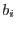
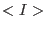
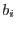
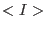

The output dataset contains a 32-bit-real-valued image which is that linear combination
 of the input model components  which most closely approximates the expectation value  of the (masked) image
of the input model components  which most closely approximates the expectation value  of the (masked) image  . The best-fit amplitudes
and the names of the component datasets are stored in the image array header in a table named COMPDATA which has columns as follows:
. The best-fit amplitudes
and the names of the component datasets are stored in the image array header in a table named COMPDATA which has columns as follows: